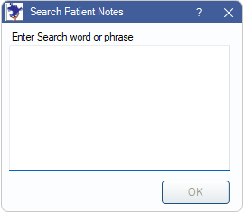

Patient Notes Report
Use the Patient Notes report to search for specific text in certain patient note fields.
In Standard Reports, in the List area, click Patient Notes.
Note: To control user access to this report, see Report Setup: Security Permissions.
Enter a Search word or phrase: Type the word or phrase to search in the patient note fields (i.e., Address and Phone Notes, Fam Urgent Fin Note, Med Urgent Note, and Appointments Module Notes for specific text.)
Click OK to launch the report results in the User Query window.
Below are descriptions of the report columns.

- The following fields are pulled from Edit Patient Information for the listed patient:
- LName: Patient Last Name.
- FName: Patient First Name.
- Preferred: Preferred Name.
- PatStatus: Patient Status (e.g., Patient, Inactive, etc).
- Gender: Patient Gender.
- Birthdate: Patient Birthdate.
- Address, Address 2, City, State, zip: Patient Address.
- HmPhone: Home Phone number.
- WkPhone: Work Phone number.
- WirelessPhone: Wireless Phone number.
- Guarantor: Name of family guarantor.
- PriProv: Patient's Primary Provider from Edit Patient Information window.
- AddrNote: Address and Phone Notes from Edit Patient Information window.
- FamFinUrgNote: Fam Urgent Fin Note from Account Module.
- MedUrgNote: Med Urgent note from Medical Info tab in Chart Module.
- ApptModNote: Appointment Module Note from Patient Appointments window.
- DateFirstVisit: Date of First Visit from Edit Patient Information: Other Tab.